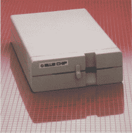
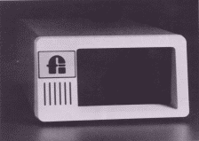

Selby Bateman, Features Editor
A 3.5-inch microdisk drive for the 64? A hard disk storage system for the 128? The continuing evolution of personal computers is causing major shifts in the kinds of data storage devices being used. There are signs that even the familiar 5-1/4-inch floppy disk may eventually go the way of punch cards and paper tape storage methods. Here's a look at what's headed your way in the emerging microcomputer industry Commodore market.
Consider the 1541 disk drive: It's been called a "toy," a "lumbering hippo," and "the albatross of the Commodore 64." Business users impatiently deride its slow operating speed. Alternative devices and software speedup schemes have been offered by other manufacturers. And even defenders of the 1541 have been known to drum their fingers waiting for it to load data at a relatively slow 512 bytes per second.
Yet despite the insults hurled at the 1541, one Commodore source estimates that as many as three-quarters of the five million 64s and VIC-20s sold worldwide are used with 1541s (or the earlier 1540 drives). The slow but relatively inexpensive 1541 became another salvo in the continuing battle to bring down prices and spur consumer sales of computers.
It's difficult to believe that the 64 and the 1541 are almost four years old. At the Consumer Electronics Show (CES) in January 1982, Commodore introduced its new 64K computer at a suggested retail of $595, a breakthrough in price and power. Commodore also introduced a companion for the 64: the 1541 drive, a direct descendant of earlier drives used with the VIC-20 and PET computers.
When first released, the 1541 sold for almost $600. But prices dropped swiftly, just as they did for the 64 itself. Soon, a 1541 could be bought for $399, then $299, and $250. Today, a new 1541 can be purchased from some vendors for as little as $149, and used 1541s frequently are available for $99.
But for many 64 users, the 1541 was not their first storage device. Commodore's Datassette tape recorder, a digital cousin of the common audio cassette tape recorder, was offered at even less expense.
Why tape recorders? The emerging microcomputer industry borrowed ideas from mainframe computer systems, and tape storage proved to be a natural - inexpensive and dependable. The problem with tape storage is its speed.
A tape recorder is a sequential access device. That is, the magnetic information is read sequentially from the tape as it passes in front of a stationary read/write head. To get to a particular program on the tape, several other programs may have to slide by the tape head before it reaches the one you want.
On the other hand, a disk drive is a random access device. The read/write head moves across a spinning disk, much like the stylus of a record player moves across the face of an album. The result is a much more efficient means of data access than a cassette tape. Although the 1541 is slower than other computers' disk drives, it is much faster than a Datassette.
Despite its slowness, the Datassette and some third-party cassette recorders introduced thousands of computer users to data storage in the early years of the Commodore 64 and the VIC-20. Commercial software was usually offered in both tape and disk format (and frequently in plug-in ROM cartridges). But during the past year and a half, virtually all commercial software vendors have forsaken tape versions of 64 software. The thousands of commercial programs available for the 64 are almost all on disk. And at Commodore, stacks of Datassettes sit boxed and ready with no place to go. Technology has rendered them obsolete.
A computer as inexpensive as the 64 had to have a disk drive in the same price range. To cut costs, Commodore equipped the VIC and 64 drives with serial data transmission ports, much slower than the IEEE parallel ports used in the earlier PET disk drives. Adding to the problem, Commodore engineers reportedly had to slow very slightly the original data transfer speed of the 1540 (designed for the VIC) in order to make the new 1541 drive compatible with the 64 - an engineering concession to marketing plans for the computers.
A serial connection moves only one bit of data at a time, rather than multiple bits sent simultaneously in a parallel connection. Further slowing serial transfer between the 64 and the 1541 is the fact that the VIC and 64 (and Plus/4 and 16) require the computer's main microprocessor to disassemble a byte of information into its individual bits, add several controlling bits, and then send the information. This takes extra time for the microprocessor. A special-purpose hardware serial device could accomplish this much faster.
That's exactly what Commodore has done in the new 128 computer and its 1571 disk drive. Special hardware takes care of most communication handling (the first CIA chip takes on extra work), freeing the microprocessor from these chores and thus increasing the speed of transfer. Commodore calls this serial fast mode as opposed to the 64/1541 slow mode. As 1571 owners know, their disk drives can actually work at different speeds, depending on whether it's in 1571 mode for the 128, 1541 mode for the 64 or 128, or CP/M mode.
A number of companies have produced Commodore-compatible disk drives in an attempt to improve on the 1541.  The BCD-5.25 drive from Blue Chip Electronics, the Indus GT from Indus Systems, the MSD SD-1 (single drive) and SD-2 (dual drives) from MSD Systems, the Enhancer 2000 from The Comtel Group, and the Clone II disk drive from HBH Sales Corp. are among the best known of these alternative disk drives. As a group, they offer considerably faster operating speeds and a variety of extra features.
But, as some GAZETTE readers have discovered, these "Commodore compatible" drives aren't always "1541 compatible," a big difference when it comes to loading and using some commercial software. There are even a few commercial programs that won't load on the 1571 in 1541 mode. Compatibility problems usually crop up when a commercial software producer has copy-protected disks in such a way that the program check for the ROM (Read-Only Memory) routines to be found in the 1541 drive. Since the other disk drive makers are forbidden by copyright law from copying Commodore's 1541 ROM exactly, they have slight differences in the way they operate. Sometimes, these differences are enough to make the software fail to load properly. Although most of the drive manufacturers do extensive testing of commercial software before releasing the drive, new protection schemes arrive every day.
But for many users, the problem of commercial software incompatibility is not sufficient to keep them from using these faster and often more reliable drives.
Another way around the 1541's weaknesses has been offered by several software manufacturers: cartridge- or disk-based programs which speed up the data transfer rate between the computer and the disk drive. Among these are the Fast Load cartridge from Epyx, the MACH-5 cartridge and disk from Access, the 1541 Flash! hardware adapter from Skyles, and the Kwik-Load! disk from DataMost. The GAZETTE has also offered its own quick-load programs for the 64, "TurboTape" and "TurboDisk" in the July 1985 issue.
A less common approach to storage devices for the 64 has been taken by Entrepo of Sunnyvale, California, maker of the Quick Data Drive (QDD). The QDD is a stringy floppy system, a high-speed cassette tape in a small wafer. As with a cassette tape player, like the Datassette, the QDD is a sequential access storage device. But the tape is a continuous loop; it doesn't have a beginning and end, so it doesn't have to be rewound to the beginning, it just fast-forwards until the program is found. Programs can load considerably faster than a regular cassette tape and even the 1541 because data is transferred at a faster rate. To the computer, the QDD acts more like a disk drive than a tape drive.
Although Entrepo has been transferring a number of third-party commercial software programs on wafers for use with the QDD, software vendors aren't likely to support this format unless a large enough installed base of QDDs makes it worthwhile. Still, at a suggested retail price of $84.95, the QDD offers an innovative, relatively inexpensive data storage system for Commodore owners. (For more information on the QDD, see the November 1985 ''Horizons'' column.)
Another Commodore drive, the SFD-1001, is actually an older model PET disk drive that can be used with your 64 or 128 (in 64 mode). Priced at under $400, the SFD-1001 is a one-megabyte double-sided, double-density parallel drive that requires an IEEE parallel interface and a Commodore PET computer cable to work with your 64. These drives are no longer in production, and were first built by Commodore for the PET computers, so they're not meant to run 64 commercial software made for the 1541. However, Progressive Peripherals and Software has acquired the marketing rights to the remaining stocks of these drives.
One of the fastest growing trends in the data storage area is the move toward 3.5-inch microfloppy disks, adopted for Apple's Macintosh and for the new 520 ST from Atari and the Amiga from Commodore. Encased in rigid plastic, these disks are more rugged, faster, and pack more data per disk (usually about 400K single-sided, 800K double-sided) than most standard 5-1/4-inch disks (approximately 174K on a 1541 unformatted disk). Industry rumors are that IBM may soon adopt the 3.5-inch standard for one or more of its new computers, which would give this format an even greater boost. During 1985, Apple Computer announced a 3.5-inch drive to be used with its Apple IIe and IIc computers, as well.
Will Commodore also offer a 3.5-inch disk drive for use with the 64 and/or 128? So far, company officials have been against the idea, concentrating their efforts on getting the new 128 and Amiga computers out. But, from a technical standpoint, Commodore could market a 3.5-inch drive for the 64 or 128 tomorrow, say several sources.
At last summer's CES show in Chicago, Commodore announced to the press its intention to market an LCD laptop portable computer, which could be used with an external 3.5-inch drive. Although the laptop portable has been shelved for the time being, Commodore is said to be looking at the 3.5-inch drive for use with the 64 and/or 128. With the 64's immense base of 5-1/4-inch software, why bother with 3.5-inch media? Certainly, software companies would have to see a potential for a large installed base of 3.5-inch drives before converting their products to that format. But, as the 3.5-inch trend continues to gather speed, some developers feel there may be an emerging market for that type of storage device. Apple's decision to offer a 3.5-inch disk drive for the Apple II computers, which also have a huge base of 5-1/4-inch software, may help Commodore decide in favor of releasing the drive.
Commodore is also holding off on the release of the previously announced 1572 dual disk drive for the 128. No price had been announced, but the 1572 was to feature two 5-1/4-inch drives for 64, 128, or CP/M modes. Each of the drives would read double-sided, single-density disks with up to 340K (formatted) memory in 128 mode, and double-sided, double-density disks with up to 410K (formatted) memory in CP/M mode.
One company, Blue Chip Electronics, plans to make and sell a 3.5-inch drive for the Commodore 64 as early as the first quarter of 1986. Called the BCD/3.5, the drive will work with the 64 and with the 128 in 64 mode, according to John Rossi, president of Blue Chip. To be priced at under $100, the BCD/3.5 is supposed to carry 250K per disk and let you copy programs from the 1541 5-1/4-inch format to 3.5-inch format. Prices for 3.5-inch disks and drives will be dropping across the computer industry in 1986, says Rossi, especially if IBM adopts such a drive, as expected.
Blue Chip is also planning an alternative to the 128's 1571 drive. Although still in prototype stage at this writing, the unit is tentatively called the BCD/128, will sell for under $200, and will operate in all three 128 modes 64, 128, and CP/M.
Another company planning a replacement for the 1571 is World Disk Drives of Laguna Hills, California. The company originally planned to market a 64-compatible disk drive, the Mirage, but shelved the idea and switched to the potential market for 128 drives. Tentatively called the CXT-1281, the drive is to be sold for just under $300, and operates in all three modes. In addition, the drive is planned to read single-density CP/M disks (such as those on Osborne computers) as well as the double-density CP/M disks which the 1571 drive reads. The unit is also expected to come with a built-in parallel printer interface that features full Commodore graphics and conversion from Commodore ASCII to standard ASCII.
To be marketed as a part of the CXT-1281 (possibly for an extra charge) is a ROM configuration program which will let the drive automatically check for what kind of CP/M disk is installed (Kaypro, Osborne, etc.). Once classified, the drive will configure the keyboard to emulate the appropriate computer's keyboard commands. The drive should be available by the time you read this.
For the maximum in data storage, personal computers need the capacities of a hard disk, which can hold 10, 20, even 100 megabytes (MB) of information. To put things in perspective, it would take 60 single-sided 1541 disks (or 30 double-sided 1571 disks) to hold the information stored on one 10-MB hard disk.
Commodore was scheduled to announce a hard disk for the 64 at last summer's CES show, but held back at the last minute. At this time, according to one Commodore source, there are no plans to market a hard disk for either the 64 or the 128. Again, according to several sources, marketing considerations won out over technical capability.
Two companies that do sell hard disks for the Commodore 64 also plan to sell hard disks for the 128 in all three modes.
 Fiscal Information, Inc., has released an improved version of its Lt. Kernel hard disk drive for the 64 (and 128 in 64 mode). Up to 16 64s can be linked with the Lt. Kernel, which comes in 10MB or 20MB versions and is 43 times faster than the 1541. Priced at $1595 for the 10MB single unit, the new Lt. Kernel carries its own self-contained DOS (disk operating system) and uses none of the 64's RAM. The unit connects to the computer's cartridge port and transparently implements all of the 1541's DOS functions.
Hard disks have been used with 64s in a variety of areas, primarily for bulletin boards, retail stores, police department databases, and software development houses, says Lloyd Sponenburgh, director of hardware development for Fiscal Information, Inc. Although the present Lt. Kernel doesn't support the 128 in CP/M and 128 modes, the company hopes to have it working in all three modes by early January, Sponenburgh says.
Computer Specialties, Inc. (CSI) has a hard disk for the Commodore 64, the CSI 10C hard disk drive system, a 10MB drive which also sells for $1595. The CSI 10C works in both 64 and 128 modes, can be linked to as many as eight computers, and has an intelligent backup function which lets the hard drive know what kind of backup drive is attached.
Although hard disk drives have generally been too expensive for many home users, that's changing. For example, a new hard drive for the Atari 520 ST computer should be available for around $699 by the time you read this. As technology changes and prices drop, it's possible to see hard disks for the 64 and/or 128 in that price range during 1986.
The power and range of data storage devices are changing as personal computers become more sophisticated and new technologies emerge. Among the advanced storage options already in use with some computers are hard disk drives with removable cartridges, and the Bernoulli Box, a flexible-disk system with the power of a hard drive that's based on a novel air-cushion technology. On the horizon is a growing array of optical disk media that use low-power lasers to read digital information from compact discs. Many computer experts agree that this laser-driven technology will one day supercede the magnetic media we use today.
For Commodore owners, it's not time to think about throwing away all the 5-1/4-inch disks. But with data storage formats such as the 3.5-inch disk and hard drives moving into the personal computer marketplace, the future of the 5-1/4-inch floppy disk may be a short one.
| BCD/5.25 Disk Drive ($179) 5-1/4-inch 64-compatible disk drive; works in 64 mode on 128. |
Blue Chip Electronics, Inc. 2 W. Alameda Tempe, AZ 852S2 |
| BCD/3.5 Disk Drive (under $100) 3.5-inch disk drive for Commodore 64. | |
| BCD/128 (tentative name) (under $200) 5-1/4-inch disk drive for Commodore 128. | |
| Clone II ($499) Commodore compatible disk drive. |
HBH Sales Company 225 West Main Collinsville, IL 62234 |
| Commodore 1541 ($199) Disk drive for the 64. |
Commodore Business Machines 1200 Wilson Dr. West Chester, PA 19380 |
| Commodore 1571 ($299) Disk drive for the 128. | |
| CSI 10C ($1595) 10MB hard disk for the 64. |
Computer Specialties, Inc. P.O. Box 1718 Melbourne, FL 32902 |
| CXT-1281 (under $300) Commodore 128-compatible drive. |
World Disk Drives 23502 Ridge Route Dr. Bldg. D Laguna Hills, CA 92653 |
| Enhancer 2000 ($199) Commodore 64-compatible disk drive. |
The Comtel Group, Inc. P.O. Box 15485 Santa Ana, CA 92705 |
| Fast Load ($39.95) Cartridge-based quick load program for 64 and 1541. |
Epyx, Inc. 1043 Kiel Ct. Sunnyvale, CA 94089 |
| 1541 Flash! ($99.95) Hardware-based quick load system for 64 and 1541. |
Skyles Electric Works 231E South Whisman Rd. Mountain View, CA 94041 |
| Indus GT ($349) Commodore 64-compatible disk drive. |
Indus Systems 9304 Deering Ave. Chatsworth, CA 91317 |
| Kwik-Load ($19.95) Disk-based quick load program for 64 and 1541. |
Datamost, Inc. 19821 Nordhoff St. Northridge, CA 91324 |
| Lt. Kernel ($1595) 10MB and 20MB hard disk drives for Commodore 64. |
Fiscal Information, Inc. P.O. Box 10270 Daytona Beach, FL 32020 |
| MACH-5 ($34.95) Cartridge- and disk-based quick load program for 64 and 1541. |
Access Software, Inc. 925 East 900 South Salt Lake City, UT 84?05 |
| Quick Data Drive ($84.95) "Microwafer"-based stringy floppy drive for 64. |
Entrepo, Inc. 1294 Lawrence Station Rd. Sunnyvale, CA 94080 |
| SD1 ($200) Commodore 64-compatible disk drive. |
MSD Systems, Inc. 10031 Monroe, Suite 206 Dallas, TX 75229 |
| SD2 ($434) Commodore 64-compatible dual disk drives. | |
| SFD-1001 (under $400) One-megabyte double-sided, double- density parallel drive; requires IEEE interface and PET cable to work with 64. |
Progressive Peripherals and Software, Inc. 464 Kalamaph St. Denver, CO 80204 |
Published in COMPUTE!'s Gazette, Issue 32, February 1986. Copyright © 1986 COMPUTE! Publications, Inc.
| This page has been created by Sami Rautiainen. | |
| Read the small print. | Last updated September 05, 2020. |
{kind=link}